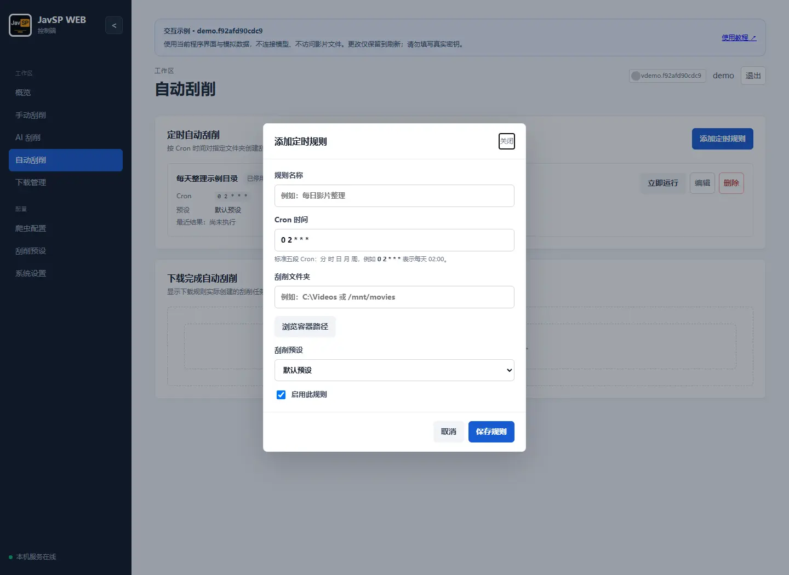

JAVSP WEB / 使用教程
从安装到稳定整理媒体库。
先用少量影片验证路径、预设和资料来源，再接入定时任务与下载器。每一节都对应程序中的实际入口。
Windows 本机使用 EXE，服务器或 NAS 使用 Docker。
确认分类、数据源、输出路径以及移动/硬链接设置。
先刮削一个影片目录，核对日志和输出，再开启自动化。
首次账号和密码均为 admin。登录后到“系统设置 → 用户管理”修改密码。网页填写的路径必须由运行 JavSP WEB 的那台机器或容器访问，浏览器所在电脑的文件并不会自动上传。
想先熟悉界面，可打开交互示例。示例版本使用 demo.内容指纹 标识当前前端，不冒充 Docker/EXE 发行版本；更改只保留到刷新，不要输入真实密钥。
Windows：本机运行与文件选择
- 从 Releases 下载
JavSP-Web.exe，放入可写入的固定文件夹。 - 双击运行，程序进入 Windows 通知区域并打开浏览器。若没有自动打开，访问下方地址。
- 登录后选择“手动刮削”，可选择文件夹、单个视频或批量选择视频文件；多选时使用 Ctrl / Shift。
- 第一次使用先确认预设中的输出路径与整理方式，避免在未经检查的默认设置下整理整个媒体库。
http://127.0.0.1:8090/loginEXE 的配置和任务数据默认保存在程序旁的 data 目录。关闭浏览器不等于退出程序；通过通知区域菜单退出后再替换 EXE。EXE 可检查新版本，但不能通过网页安装，需下载后手动替换并保留数据目录。
页面打不开时先检查程序是否运行、8090 端口是否被占用。EXE 默认监听本机地址；需要长期供其他设备使用时，建议使用 Docker 部署。
下载 Windows 正式版 ↗Docker / Compose：先挂载，再填写容器路径
安装 Docker 与 Compose 插件后，新建工作文件夹，并将以下内容保存为 docker-compose.yml。配置直接拉取已构建的 latest 镜像，无需下载源码或执行 build。
services:
javsp-web:
image: apecme/javsp-web:latest
container_name: javsp-web
restart: unless-stopped
ports:
- "8090:8090"
environment:
JAVSP_WEB_HOST: 0.0.0.0
JAVSP_WEB_PORT: 8090
JAVSP_WEB_TIMEZONE: Asia/Shanghai
TZ: Asia/Shanghai
extra_hosts:
- "host.docker.internal:host-gateway"
volumes:
- ./data:/app/data
- ./video:/video把影片放入 ./video，或替换冒号左侧为真实影片目录，例如 /mnt/media:/video。Windows Docker 可使用 D:/Videos:/video。在 Compose 文件所在目录执行：
docker compose config --quiet
docker compose up -d浏览器打开 http://服务器地址:8090/login。若宿主机 8090 已占用，可将端口映射改成 8091:8090，网页访问 8091；容器端口无需改变。
/mnt/media/待整理 → 容器 /video/待整理。在“待处理路径”和定时规则中填后者。输入和输出目录都应挂载，容器需有相应写入权限。/app/data 必须持久化，它包含账号、配置、任务、AI 设置和应用更新数据。不要为了修复容器而直接删除该目录。启动失败可查看 docker compose logs --tail 100 javsp-web。如何更新见版本与备份。
手动刮削：提交、查看与处理结果
- 进入“手动刮削”，填写文件或目录路径；Docker 使用“浏览容器路径”，Windows 本机可使用文件选择器。
- 选定刮削预设，点击“启动 JavSP”。目录会先生成后台扫描任务，再生成影片任务；不是一次性在浏览器中扫描全部文件。
- 在任务队列查看状态、扫描数量和阶段进度。支持按状态、关键词、大小和时间筛选，并分页查看。
- 打开“详情”，先看最终结果，再展开数据源和图片日志。单个爬虫失败不代表整个任务失败；以最终是否取得必需资料并完成整理为准。

什么时候重试，什么时候处理文件？
- 只有图片失败：使用可用的图片重试入口；封面还可从任务详情发起搜索、选择候选或上传，不必反复创建整部影片任务。
- 资料错误：在详情中编辑影片资料并保存；需要同步媒体库时按提示刷新。先核对番号与来源，避免把错误资料写回。
- 整理目标冲突：检查已有输出文件或剧照目录是否属于完整入库或未完成残留；不要把“删除任务记录”当作清理输出。
- 停止和删除：运行中的任务先停止再删除。删除记录不会自动撤销整理；可用的“还原”操作依赖该任务保存的整理记录与实际文件状态。
“概览”适合按封面浏览历史任务、查看详情和批量管理记录；“手动刮削”适合跟踪当前队列。任务日志摘要可复制，详细调试日志见排错章节。
挂载盘、STRM 与分 P 文件
CloudDrive2、WebDAV 等挂载目录仍按普通路径提交；先确保服务端能列出目录，Docker 内能通过挂载路径读到文件。目录枚举慢时查看扫描任务，避免连续点击启动创建重复扫描。
- 取消慢扫描：点击“停止扫描”停止后续任务创建；底层网络文件系统仍在等待时，需等当前调用返回。已经创建的影片任务需单独处理。
- STRM：预设默认最小匹配大小为
232MiB。STRM 是很小的文本文件，可在“扫描器”勾选“STRM 忽略最小文件大小”，其他视频仍遵守大小限制。 - 分 P：同番号的
ABC-123-1.mp4、ABC-123-2.mp4可作为分段识别。分段编号必须明确且不重复；一个目录里的广告视频不能因为共同目录名而被当作分 P。 - 批量选择：本机文件选择器支持一次多选。多选后手动修改路径会取消原多选列表。Docker 当前浏览器选择目录或单文件，不上传本地影片。
广告混入时优先检查“影片分类”规则，并启用“仅扫描匹配影片分类”。不要通过把所有文件都放宽为影片来解决“没有找到符合大小的文件”。
刮削预设：识别规则、来源与整理方式
进入“刮削预设”，可新建、编辑和删除预设，选择窗口表单或完整 config.yml。保存后供新任务使用；已创建任务持有配置快照，不会随编辑自动改变。
| 分组 | 重点检查 |
|---|---|
| 扫描器 | 扩展名、最小大小、STRM 开关、忽略目录、已有 NFO 的目录、多线程刮削数量。 |
| 影片分类 | 分类 ID、优先级、识别方式、命名捕获组与标准番号格式。 |
| 网络 | 代理、站点镜像、请求超时与重试。用代理测试入口核对实际出口。 |
| 爬虫 | 每个分类的数据源与优先顺序、成功必需字段，以及 AI 直刮或失败兜底。 |
| 文件夹整理 / 图片 | 输出目录模板、文件名、移动/硬链接、封面裁剪、剧照下载。 |
| 翻译器 | 翻译服务与字段。它与系统 AI 接入独立，配置一个不会自动配置另一个。 |
分类为什么会影响数据源？
高优先级规则先匹配。正则需包含 (?P<avid>...)，avid_format 决定生成的番号。分类 ID 与“爬虫”中的来源列表对应；例如自定义“无码”规则先匹配了 FC2，实际使用的是“无码”来源，而不是 FC2 来源。遇到此类问题先调整优先级或该分类的数据源。

“跳过已有 NFO 的目录”检查的是扫描输入目录，不保证输出目标没有冲突。“仅扫描匹配影片分类”适合过滤无关视频，但前提是规则能识别你要保留的影片。新规则先用少量文件验证。
输出模板和硬链接有文件系统要求，使用前核对输入与输出磁盘及权限。更多核心字段说明可查阅 JavSP Wiki。
爬虫与网络：先单独测试，再运行整批
- 进入“爬虫配置”，选择具体爬虫，输入一个确定存在的番号并运行测试。
- 查看抓取字段和运行输出：是否取得标题、封面，是否出现 403、超时或解析异常。
- 在“刮削预设 → 爬虫”调整该分类使用的数据源与顺序；爬虫配置页管理代码，预设页决定任务使用哪些爬虫。
- 自定义爬虫保存后再单独测试；仅保存代码不代表能抓到资料。内置爬虫只读，可移除和恢复。
代理地址由服务端使用。Docker 中 127.0.0.1 指向容器，宿主机代理需使用可达地址。HTTPS 证书失败时检查镜像域名、代理证书和系统信任，不要关闭证书校验。403 需同时检查出口与该站点的登录 Cookie；同步 Cookie 成功也不保证站点授权。
AI 可以协助分析和生成爬虫，但保存自定义代码需要确认，并在后续测试或任务中实际执行；应先检查生成代码和测试结果。
AI / QUICK START
连接模型，开始第一段对话。
管理员进入“系统设置 → AI 接入”。整个卡片与其中的模型、搜索、上下文、提示词和 Skills 都可折叠。若当前版本没有这些设置，请先更新到包含高级 AI 配置的体验版。
- 展开模型接入。选择提供商，填写 API 基础地址、模型名称和密钥。模型必须支持工具调用，才能使用任务、预设和爬虫工具。
- 测试连接。点击“测试连接”验证模型与工具调用。API KEY 留空保留已保存密钥；勾选“清除已保存的 API KEY”才会清除。
- 启用并保存。勾选“启用 AI 刮削”，点击“保存 AI 配置”。测试不会自动保存。新设置从下一条消息开始生效，运行中的分析沿用启动时参数。
- 开始对话。进入“AI 刮削”，输入“查看最近失败的刮削任务，按原因归类并给出优先建议”。展开工具记录可核对依据，模型返回思考内容时可展开查看。
| 提供商 | LLM URL | 填写说明 |
|---|---|---|
| OpenAI 兼容服务 | https://你的服务地址/v1 | 按服务商说明填写模型 ID 与密钥，不能填写聊天网页地址。 |
| DeepSeek | https://api.deepseek.com/v1 | 填写账号可用且支持工具调用的模型。 |
| Ollama | http://host.docker.internal:11434/v1 | Docker 访问宿主机的示例；Ollama 需监听容器可访问的地址，Linux 需配置 host-gateway。通常无需密钥。 |
| Anthropic | https://api.anthropic.com/v1 | 选择 Anthropic 协议连接原生 Messages 接口。 |
LLM 超时默认 60 秒，可设 10～120 秒。容器中的 127.0.0.1 指向容器自身，外部模型服务需填写容器能访问的地址。
会话与自动刮削
历史列表支持搜索、切换、重命名、删除；手机端点击会话列表按钮打开。回复支持逐步显示、复制及停止生成。删除会话不会删除已创建的任务，停止生成不会撤销已确认的操作。

要用于定时或批量任务，还需在“刮削预设 → 爬虫”勾选“启用 AI 刮削”。建议同时勾选“当所有爬虫刮削失败时启用 AI 刮削”，先使用普通爬虫；取消则直接使用 AI。自动 AI 刮削依赖联网搜索，请同时开启搜索开关。

联网搜索：选择来源，控制读取量。
“允许 AI 联网搜索”默认开启，控制公开网页搜索工具与 AI 影片资料提取。关闭后仍可分析已有任务、读取预设和使用普通爬虫，但直接 AI 刮削或 AI 兜底会提示搜索未启用。此开关不控制模型服务商自身的内置联网功能。
Bing RSS 或自建 SearXNG
Bing RSS无需搜索密钥，使用服务器网络访问 Bing。也可选择 SearXNG，填写自建实例地址，例如 https://search.example.com，并在实例的 search.formats 中启用 json。目前不支持需要额外鉴权请求头的实例。
“测试联网搜索”用表单配置搜索 JavSP，不调用 LLM，也不保存配置。无结果与请求失败会分别提示，测试成功后请保存。
| 设置 | 默认 / 范围 | 作用 |
|---|---|---|
| 最多搜索结果数 | 8 / 1～20 | 最多检查并返回的候选结果数量。 |
| 最多读取网页数 | 3 / 1～8 | AI 影片提取最多读取的有效来源页，不能超过搜索结果数。 |
| 每页最多提取字符数 | 16000 / 1000～32000 | 清理脚本等内容后的正文长度。增加可保留更多信息，也增加上下文消耗。 |
| 搜索与网页请求超时 | 15 秒 / 5～60 秒 | 搜索和每个来源页请求的等待时间；多页依次处理，总耗时可能更长。 |
上下文与生成：按模型容量设置。
| 设置 | 默认 / 范围 | 如何选择 |
|---|---|---|
| 最长上下文 | 65536 / 8192～1048576 Token | 输入、系统提示词、工具定义和预留输出的总预算。不能超过模型实际窗口。 |
| 最大输出长度 | 4096 / 256～65536 Token | 必须小于上下文，并符合模型输出限制。截断时可适当增加或缩小问题范围。 |
| 最多携带历史消息数 | 16 / 2～40 | 用户与 AI 消息各算一条，从较新的完整对话开始携带，不删除历史。 |
| 采样温度 | 留空 / 0～1 | 留空由模型决定，低值偏向稳定。不支持此参数的模型请留空。 |
| 每次分析最多轮数 | 6 / 1～12 | 一次提问的模型请求次数，包含使用工具后的总结。 |
| 每次分析最多工具调用数 | 12 / 1～24 | 限制一次分析的总工具调用量。增加上限会增加潜在耗时和用量。 |
程序按请求内容的 UTF-8 字节数保守估算 Token 用量，并预留输出空间。这不是模型分词器的精确计数，可能提前移除较早对话。系统规则、当前问题和本轮工具调用会保留，不截断工具参数。
当前资料本身超限时会提示缩小范围。可先减少网页数或正文长度，再考虑提高上下文。每个会话最多保存 40 条用户/AI 消息，达到上限请新建会话；调整上下文不会扩大历史存储上限。
提示词与 Skills：统一回答，补充工作规范。
预设提示词默认要求先给结论、合并相同失败原因、再给处理建议。需要清单、日志或代码时，在对话中要求展开。可编辑后保存，也可点击“恢复默认提示词”再保存。
项目 Skills 支持添加、编辑、删除及恢复内置内容，不提供下载。填写带有 name 和 description 的 SKILL.md；例如：
---
name: diagnose-library
description: 分析失败任务，按原因分组并给出可验证的建议
---
# 失败任务诊断
先查看任务详情及其预设，再按失败阶段归类。
区分已确认原因和需要进一步核实的线索。
默认只给结论和一项优先建议，按需展开任务明细。提示词和 Skills 不会增加工具权限。对话中整理文件、保存爬虫、修改预设和影片资料仍先生成预览，需要点击“确认执行”。自动刮削由已启用的预设和规则执行，不逐个弹出对话确认。
常见问题
- 连接成功但没有调用工具：检查模型是否支持工具调用。
- HTTP 401 / 403：核对密钥、账号权限和服务地址。
- HTTP 400 或温度错误：先将温度留空，再核对输出上限和服务商支持的参数。
- SearXNG 返回 403 或格式错误：确认已启用 JSON，且允许应用服务器访问。
- 搜索有结果但刮削失败：摘要不等于有效来源，请检查详情页访问、预设代理和必需字段。
- 没有思考内容：仅模型明确返回思考字段时展示，不会凭空补写。
定时自动刮削：固定时间扫描文件夹
- 先在“手动刮削”验证目标目录与预设，确认输出正确。
- 进入“自动刮削 → 添加定时规则”，填写名称、Cron 时间、服务端文件夹路径并选择预设。
- 勾选“启用此规则”后保存，检查规则显示的“下次执行”。时间按应用时区计算，推荐部署时设为
Asia/Shanghai。 - 到执行时间后，查看“最近结果”和执行记录，再到任务队列查看生成的影片任务。规则保存在数据目录中，重启后保留。
| 五段 Cron（分 时 日 月 周） | 执行时间 |
|---|---|
0 2 * * * | 每天 02:00 |
0 */6 * * * | 每天 00:00、06:00、12:00、18:00 |
30 3 * * 1 | 每周一 03:30 |

上一批任务仍在排队、运行或重试图片时，下一次触发会跳过。没有符合条件的新文件属于空扫描结果，不应反复创建失败任务。
要暂停规则，编辑后取消启用并保存。删除规则不会删除已生成的任务或已整理文件。避免让多个规则反复扫描同一输入目录；NFO 跳过、大小限制和分类过滤仍以选中的预设为准。
下载器与路径映射：下载完成后自动整理
连接 qBittorrent
- 在 qBittorrent 中开启 Web UI，设置账号密码，确认 JavSP WEB 服务端可以访问。
- 进入“系统设置 → 下载器”，添加名称、Web UI 地址、账号和密码，测试连接后保存。Docker 中不能用
localhost指代另一个容器。 - 在“下载管理”选择下载器，查看连接状态和种子。需要接管时设置标签、分类范围，再保存管理设置；留空意味着扩大匹配范围。
- 在“自动刮削”配置下载完成规则，填写匹配标签、分类和刮削预设。先用一个已完成的测试下载核对执行记录。
把下载器路径转换为应用能访问的路径
两个容器可能看到同一份文件的不同路径。在“系统设置 → 路径映射”填写下载器上报的源路径与 JavSP WEB 的目标路径：
下载器： /downloads/DEMO-001/DEMO-001.mkv
源路径： /downloads
目标路径：/video/待整理
应用读取：/video/待整理/DEMO-001/DEMO-001.mkv映射只转换路径，不会创建挂载或复制文件。需要先把真实目录挂载到 JavSP WEB 容器。使用路径检查入口核对转换结果与可访问性；“下载器已连接”只证明 API 可用，不能证明影片可读。
限速、做种与删除
限速按每个已接管种子单独应用，单位为 KiB/s；分享率、做种分钟和非活跃分钟也可配置。-1 表示该项不限制。开启“达到限制后自动删种（保留文件）”后，已完成种子达到任一有效阈值就会删种，不删除影片文件。默认先关闭自动删种，确认范围后再启用；整理时移动文件会影响原下载路径，仍需做种时先核对硬链接方案。
下载完成不等于刮削成功。查看自动刮削执行记录，区分规则未命中、路径不可达、任务已创建和刮削失败，再处理对应环节。
媒体库与 CookieCloud
连接 Emby / Jellyfin
- 在媒体服务器中创建 API 密钥，在“系统设置 → 媒体服务器”选择类型并填写服务地址。
- 点击“验证并读取媒体库”，勾选需要管理的媒体库后保存。
- 先使用“同步媒体库”核对连通性，再按需开启“刮削任务完成后自动扫描媒体库”，设置自动扫描延迟。
- 需要从任务进入播放页面时填写浏览器可访问的“外部播放地址”。内部 API 地址与外部播放地址可不同；影片仍须已被媒体服务器识别入库。
媒体服务器也需要挂载整理后的输出目录。同步触发扫描，不会替媒体服务器建立目录挂载；NFO、图片写入成功后若资料未更新，先核对媒体库路径、扫描状态及媒体服务器的元数据读取策略。
同步站点登录 Cookie
- 先配置自己的 CookieCloud 服务和浏览器扩展，在浏览器登录所需站点并同步。
- 展开“系统设置 → CookieCloud”，填写服务地址、UUID、密码；加密类型先选“自动识别”，不匹配时再选扩展使用的类型。
- 点击“测试同步”，成功后启用并保存。任务启动时同步 Cookie，供支持该 Cookie 的站点使用。
密码留空保留已保存值；勾选清除才会删除。Cookie 过期时需重新登录并同步。测试成功只说明能读取同步数据，站点仍可能因权限、出口或验证要求拒绝访问。
更新、账号与备份
Docker 网页更新
- 进入“系统设置 → 软件更新”，查看当前版本、更新通道与检查结果。
- 点击“检测更新”，发现新版本后点击“立即更新”。更新时页面显示遮罩与阶段状态，服务重启期间短暂断开属于正常过程；恢复后核对版本和结果。
- 按需开启自动检测（默认间隔 24 小时）及自动更新。自动更新默认关闭；有排队、刮削或图片任务时需等待任务结束。
加入体验计划：勾选后立即保存并尝试下载、应用 bata 程序包，无需再点击安装。使用 bata 镜像时保持加入体验计划。体验通道检查体验版本，正式通道检查正式版本；安装失败应阅读错误原因，不能只凭复选框判断已完成升级。
网页更新替换应用程序并重启应用。新程序启动验证失败时会尝试回退，页面显示实际结果；不要在更新中删除数据目录。若更新提示需要新镜像或镜像依赖发生变化，在 Compose 所在目录执行：
docker compose pull
docker compose up -dWindows EXE 与源码运行仅支持检测版本。EXE 退出后手动替换程序，源码按项目安装方式更新代码和依赖；都应保留原数据目录。
账号与备份
管理员在“用户管理”添加、编辑或删除账号。管理员可管理系统设置、自动刮削、爬虫和 AI；操作员没有这些管理入口。首次登录应更改默认密码。
迁移或更新前备份整个数据目录：Docker 为挂载到 /app/data 的宿主机目录，EXE 默认是程序旁的 data。建议停止应用后复制，避免备份过程中数据库仍在写入。影片与输出图片单独备份，数据目录备份不能代替媒体备份；其中的密钥、Cookie 和账号数据不要公开分享。
问题排查：从最终失败阶段开始
| 现象 | 先检查什么 |
|---|---|
| 没有找到符合最小大小的影片 / 没有创建任务 | 输入路径在服务端是否可读；扩展名、232MiB 默认门槛、STRM 选项、分类过滤及跳过 NFO。空扫描不代表爬虫故障。 |
| 分 P 编号不明确或重复 | 同番号文件的分段标记是否唯一；是否混入广告，或目录名导致无关视频被识别为同一番号。先检查分类过滤。 |
| 所有数据源未找到资料 | 识别后的番号、命中分类及该分类来源。用爬虫测试一个来源，再判断未收录、访问失败还是解析失败。 |
| 缺少标题、封面等必需字段 | 资料是否完整、来源是否有效；不要为了显示成功而盲目删除必需字段要求。需要 AI 兜底时检查系统和预设两处开关。 |
| 整理目标中的文件或目录已存在 | 核对目标影片、NFO、封面和“剧照”目录的现有内容，区分已入库和失败残留。重抓资料或删除任务记录不能消除文件冲突。 |
| 403、超时、证书错误 | 预设代理、镜像域名、服务端出口、系统时间和证书信任；需要登录的站点再检查 Cookie。不要关闭 HTTPS 校验。 |
| 下载完成但未刮削 | 规则是否启用、标签/分类是否命中、路径映射是否正确。查看下载自动刮削记录，不要只看下载器连接状态。 |
| AI 连接或搜索失败 | 先分别测试模型和搜索；核对协议、模型 ID、工具调用支持及上下文限制。详见 AI 章节。 |
提供能定位问题的日志
先打开失败任务详情，记录任务 ID、最终错误与相关阶段日志。完整调试日志在 data/task-logs/<任务ID>.log，每个任务最多保留两份 2MiB 日志。容器启动问题另附 docker compose logs --tail 100 javsp-web。
提交 Issue 时说明当前版本、Docker/EXE/源码部署方式、复现步骤、预设中相关选项和脱敏日志。移除密钥、Cookie、密码与私人地址；不要把完整数据目录直接上传。
前往 Issue ↗